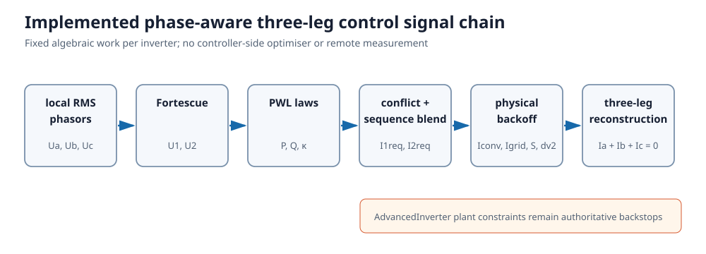
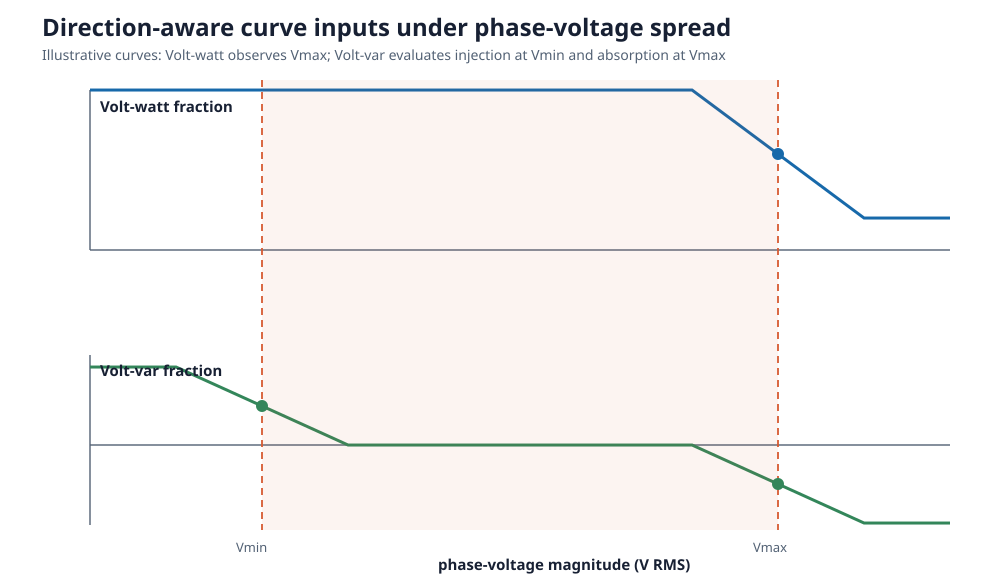
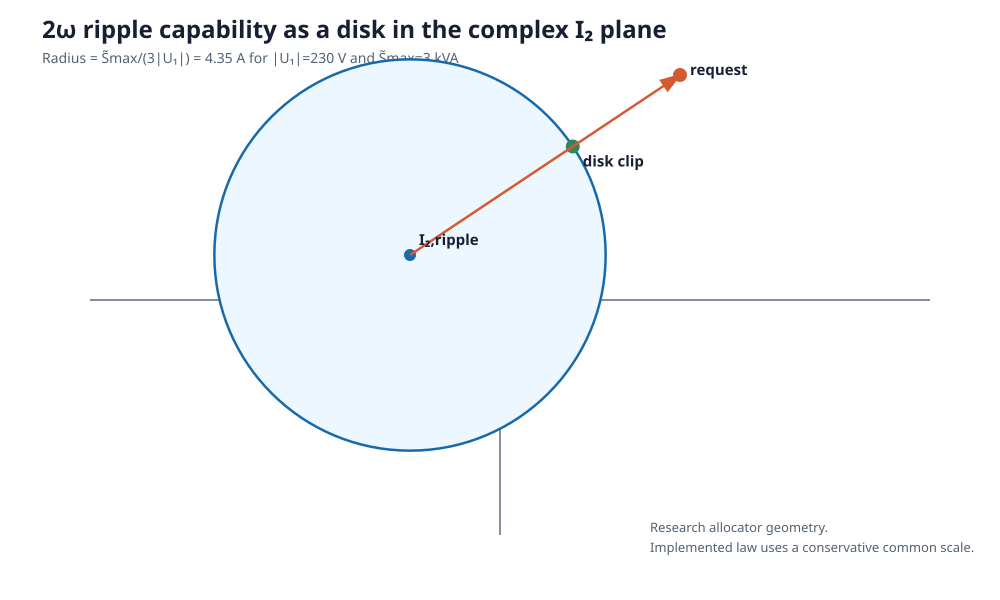

Phase-aware local control laws
This note develops and classifies steady-state local Volt-var and Volt-watt extensions for unbalanced three-phase voltages. The controller may use the local RMS voltage phasors and their relative angles, but no remote measurements or feeder-wide optimisation. The immediate target is a three-leg, three-wire converter. A four-leg converter can use the same framework with the zero-sequence channel enabled.
The proposal deliberately separates two questions:
- What response would the voltage curves prefer? Existing piecewise-linear primitives answer this question.
- What current can this converter actually produce? Topology-aware algebraic limiters answer this question without pretending that three phase-power commands are independent. A numerical optimiser is useful as an
offline oracle, but is not required in the deployed controller.
The contribution is not a new symmetrical-component controller by itself. Dual-sequence reference generation is established prior art; the contribution under study is a fixed-structure algebraic controller that can be stamped into a sparse network NLP while retaining a separate exact firmware oracle.
All phasors are fundamental-frequency RMS quantities at one equilibrium. Sequence extraction is ideal and instantaneous. There is no PLL, measurement delay, controller bandwidth, ramp rate, hysteresis, anti-windup, ride-through state machine, or dynamic-stability model. The implemented controller is three-leg and therefore has $I_0=0$. A solved equilibrium establishes neither closed-loop stability nor conformance with a standardised time response.
Normative conventions
| Item | Convention |
|---|---|
| Phase order and rotation | $a,b,c$ and $\alpha=e^{j2\pi/3}$ |
| Fortescue scaling | factor $1/3$ in both voltage and current transforms |
| Voltage/current phasors | RMS; current positive from converter into network |
| Complex power | $S=UI^*$; positive $P,Q$ are injection |
| Volt-var sign | positive $Q$ injects vars at low voltage; negative $Q$ absorbs vars at high voltage |
| `` | \widetilde S |
| Public units | SI; per-unit is internal numerical conditioning only |
Candidate and implementation status
| Candidate | Status | Role |
|---|---|---|
| average-magnitude scalar droop | implemented | legacy comparator |
| positive-sequence droop with maximum-phase watt guard | implemented | sequence comparator |
| split min/max worst-phase droop | implemented | recommended phase-aware scalar law |
| negative-sequence admittance and ripple blend | implemented | unbalance/ripple study law |
| P/Q watt, var, proportional priority | implemented | positive-sequence capability comparison |
plant-aware per-leg, apparent-power, and dv2_max backoff | implemented | physical protection surrogate |
| virtual-delta droop | future | line-to-line sensor comparator |
| closest-feasible per-phase projection | future offline oracle | upper-performance benchmark |
| power-versus-balance sequence priority | future | service allocation comparison |

Relationship to standards and reference tools
This software is a research model, not a conformance implementation. The table maps concepts without claiming clause-level equivalence; a compliance study must use the licensed, current edition and its prescribed test procedure.
| Source | Public scope relevant here | Mapping and non-coverage |
|---|---|---|
| IEEE 1547-2018 and IEEE 1547.1-2020 | DER reactive capability, voltage/power control, abnormal conditions, and conformance testing | motivates explicit curve bases and P/Q priority; this steady-state model does not reproduce response-time or conformance tests |
| AEMO overview of AS/NZS 4777.2 | LV inverter performance, testing, and smart-inverter functions | motivates an Australian comparator; no claim is made against a clause without the current amended licensed text |
| IEC 61000-4-30:2025 | power-quality measurement methods | `` |
| IEC TR 61000-3-13 | negative-sequence allocation at MV/HV/EHV | useful planning context, explicitly not an LV controller specification |
| EN 50160 | supply-voltage characteristics | a network-quality benchmark, not a local inverter-control prescription |
OpenDSS InvControl | monitored-voltage AVG, MAX, and MIN modes | independent balanced fixed-point oracle; it does not implement this split low/high Volt-var conflict law or negative-sequence droop |
OpenDSS already provides a maximum-monitored-voltage Volt-watt mode, so that guard is not claimed as novel. The specific scalar contribution is the split minimum/maximum treatment of the two Volt-var branches, a declared continuous conflict rule, and a matching fixed-structure smooth network surrogate.
Current behaviour in BMOPFTools
The present implementation is not an averaged three-leg controller:
PN_PER_PHASEis the default Volt-var/Volt-watt reference forFOUR_LEGandSINGLE_PHASEIBRs;- the
*_AVERAGEDreferences are explicit alternatives, and the legacyvoltage_aggregation="AVERAGE"field can also request averaging; and - Volt-var/Volt-watt is currently disabled for
THREE_LEG, with a warning and fallback to static power boxes.
The built-in THREE_LEG injection model uses cyclic line-to-line branch currents. AdvancedInverter instead represents physical phase-conductor currents and imposes $I_a+I_b+I_c=0$. The latter is the appropriate feasibility oracle for developing a controller intended for a physical three-leg bridge.
The unavoidable three-leg constraints
Let $U_0$, $U_1$, and $U_2$ and $I_0$, $I_1$, and $I_2$ be the RMS Fortescue voltage and current phasors. For a three-leg, three-wire converter,
\[I_0=0,\qquad I_a+I_b+I_c=0.\]
It therefore has four real fundamental-current degrees of freedom: the complex positive- and negative-sequence currents. It can affect negative-sequence voltage, but it cannot inject zero-sequence current or directly correct a zero-sequence voltage. This is a physical boundary, not a control-design limitation.
That four-real-degree budget is the organising constraint. Two complex current references consume it completely; constant active power, constant reactive power, balanced current, and a prescribed negative-sequence attenuation cannot all be imposed independently. Every practical law therefore embeds a priority or accepts a residual. The dual-sequence literature makes the same tradeoff explicit; see Nejabatkhah, Li, and Wu and the maintained IBR references.
Using the sequence convention in AdvancedInverter, aggregate mean complex power and the double-frequency oscillating-power phasor are
\[S=3(U_1I_1^*+U_2I_2^*), \qquad \widetilde S=3(U_1I_2+U_2I_1).\]
These equations expose the principal tradeoff. Negative-sequence current is the useful actuator for voltage-unbalance attenuation, but it interacts with positive-sequence voltage to change phase-current peaks and DC-link 2ω power. A balanced positive-sequence current is not ripple-free under unbalanced voltage either: with $I_2=0$, $\widetilde S=3U_2I_1$.
Every candidate controller must ultimately satisfy all of the following, not only an aggregate apparent-power circle:
- $I_0=0$ and each phase-conductor current limit;
- net DC active-power availability, including whether net import is permitted;
- converter-side apparent-power and loss limits;
- internal-voltage/filter KVL and the instantaneous switching hull;
- negative-sequence policy limits; and
- DC-bus 2ω voltage and capacitor RMS-current limits.
The physical plant should use converter-terminal $U_{int}$ and $I_{conv}$ for converter power and DC-link checks. POC powers alone omit filter voltage drop, loss, and LCL shunt current. PowerOptLab therefore derives total and sequence powers from solved converter-terminal phasors. The control law may command either converter-side current or grid-side current, but both converter-leg and grid-conductor limits remain hard constraints and take precedence over the requested service.
Candidate laws
1. Worst-phase scalar droop
This is the lowest-risk baseline. Keep a balanced positive-sequence output, but replace the mean-voltage input by direction-aware envelopes:
- Volt-watt uses the highest monitored phase voltage, so one overvoltage phase cannot be hidden by two normal phases;
- the injecting side of Volt-var uses the lowest phase voltage;
- the absorbing side of Volt-var uses the highest phase voltage; and
- if low- and high-voltage requests coexist, a declared priority or deadlock rule resolves the conflict rather than allowing their average to select the wrong direction.
The recommended first rule is continuous dominant severity. Normalise the positive and negative branch ordinates by their respective branch maxima, form their signed severity difference $d$, and blend with $w=(1+d/\sqrt{d^2+\epsilon_c^2})/2$. The request $q=wq_\ell+(1-w)q_h$ approaches winner-take-all away from the tie but returns zero continuously at equal severity. This avoids both :net cancellation away from a tie and the equilibrium/conditioning problems of a discontinuous switch. Fixed low-voltage and fixed high-voltage priorities remain useful jurisdictional comparators, while :net is retained as a legacy scientific baseline.

A conservative smooth proxy can use $|U_1|\pm k|U_2|$ instead of hard minimum and maximum operators. This law prevents the most harmful averaged decisions and needs only firmware, but it does not actively compensate voltage unbalance.
2. Virtual-delta line-to-line droop
Measure
\[U_{ab}=U_a-U_b,\quad U_{bc}=U_b-U_c,\quad U_{ca}=U_c-U_a,\]
apply the existing PWL curves to $|U_{xy}|/\sqrt{3}$, and translate the desired virtual branch currents into terminal currents with the delta incidence matrix. The result satisfies $I_a+I_b+I_c=0$ by construction.
This is attractive when the product already senses line-to-line voltages: it requires no neutral-voltage sensor and does not react to an unobservable and uncontrollable zero-sequence voltage. It should be implemented in terminal current space, or with a minimum-norm branch-current gauge. Treating three cyclic branch powers as independently rated physical legs would introduce a nonphysical circulating degree of freedom.
3. Closest-feasible per-phase droop
Evaluate the familiar curves independently to obtain preferred phase powers $s_\phi^0=p_\phi^0+jq_\phi^0$, then convert them to preferred currents,
\[i_\phi^0=\left(s_\phi^0/u_\phi\right)^*.\]
Do not apply those powers directly. Project the preferred current vector onto the converter feasible set:
\[\mathop{\mathrm{minimize}}_{i_a,i_b,i_c} \sum_\phi w_\phi|i_\phi-i_\phi^0|^2 \quad\text{subject to}\quad i_a+i_b+i_c=0\]
together with current, net-power, switching, and DC-ripple constraints. With only the KCL equality and equal weights, the projection has the simple closed form $i=i^0-\operatorname{mean}(i^0)$. The constrained version is a small local allocator.
This is the most literal generalisation of per-phase Volt-var/Volt-watt. It can use phase-asymmetric active power, reactive power, and power circulation to counter unbalance. The realised phase powers will not in general lie exactly on all three curves; the projection residual is therefore a required diagnostic, not an error to hide. Because the fully constrained projection is an online optimisation, this law is better retained initially as a research benchmark and offline oracle than as the manufacturer-facing implementation.
4. Dual-sequence droop
Use the positive-sequence channel for ordinary aggregate voltage/power control and reserve the negative-sequence channel for unbalance:
\[I_1^*=F_1(U_1),\qquad I_2^*=\operatorname{sat}\!\left(-k_2\widehat H_2^{-1}U_2\right),\]
where $H_2$ is the locally observed negative-sequence voltage sensitivity to injected current. A fixed virtual admittance is the simplest implementation. An online perturb-and-observe estimate can learn the useful angle using the same local voltage/current sensors and measurement history, without communications.
This reference family is established in the dual-sequence control literature (Nejabatkhah, Li, and Wu); optimal attenuation under current and power constraints is treated by Guo, Pal, and Jabr.
The static negative-sequence closed loop gives a useful sizing check. With the local Thévenin convention
\[U_2=E_2+Z_2I_2,qquad I_2=-\kappa e^{-j\phi_2}U_2,\]
one obtains
\[\frac{|U_2|}{|E_2|} =\frac{1}{|1+\kappa Z_2e^{-j\phi_2}|} =\frac{1}{\sqrt{1+g^2+2g\cos\delta}}, \quad g=\kappa|Z_2|,\quad \delta=\arg Z_2-\phi_2.\]
For angle alignment, halving $|U_2|$ requires $g=1$ and hence $\kappa=1/|Z_2|$. For $|Z_2|=0.2$–$0.5\ \Omega$, that is $2$–$5\ \mathrm{A/V}$. The illustrative $0.08\ \mathrm{A/V}$ example has only $g=0.016$–$0.04$, or about 1.6–3.8% attenuation when aligned. It is chosen to keep the API example lightly actuated, not as a recommended product setting. Angle mismatch can amplify unbalance when $g^2+2g\cos\delta<0$. This is a static equilibrium result only; it does not establish dynamic stability.
The sensitivity angle matters. Pure negative-sequence reactive current is not generally the best voltage actuator on a resistive LV connection, and an incorrect high gain can worsen voltage or destabilise a weak-grid controller. This law therefore needs current priority, gain scheduling, anti-windup, and a dynamic impedance/stability study beyond the steady-state OPF model.
5. Ripple-cancelling negative-sequence current
For a three-wire converter, the unconstrained choice
\[I_2^{ripple}=-\frac{U_2}{U_1}I_1\]
makes $\widetilde S=0$. This is valuable as a reference policy and as one endpoint of a tradeoff sweep. It is not automatically a voltage-unbalance controller: its current angle is selected to cancel DC power pulsation and may oppose the angle needed to attenuate $U_2$.
A useful research oracle chooses $I_2$ by minimising
\[w_v|I_2-I_2^{unbalance}|^2 +w_{dc}|U_1I_2+U_2I_1|^2 +w_i\max_\phi |I_\phi|^2,\]
subject to the exact converter limits. Varying $w_v/w_{dc}$ produces a transparent Pareto frontier between voltage unbalance, semiconductor utilisation, and capacitor stress. This optimisation-based form is not the implemented manufacturer-facing law. The implemented ripple_blend is a fixed algebraic interpolation between the two endpoints. Related voltage-unbalance/oscillating- power tradeoffs are discussed by Helaly.
6. Sequence droop with algebraic limiters (recommended)
The manufacturer-facing controller can avoid a QP or MPC entirely. At each phasor update:
Compute $U_1$ and $U_2$ with the fixed Fortescue transform. If the controller already receives phasors, this is only a few complex additions and constant multiplications.
Evaluate the existing Volt-var/Volt-watt PWL curves for the aggregate positive-sequence $P,Q$ request. Retain a maximum-phase-voltage guard for Volt-watt so that a single high phase cannot be hidden.
Evaluate a new PWL voltage-unbalance droop on $\eta=|U_2|/\sqrt{|U_1|^2+U_{floor}^2}$. Its output $\kappa(\eta)$ is a negative-sequence admittance gain.
Give that admittance a fixed configured angle relative to $U_2$,
\[I_2^v=-\kappa(\eta)e^{-j\phi_2}U_2,\]
where $\phi_2$ represents the expected local negative-sequence impedance angle. A product family can expose a small set of LV/resistive, mixed, and MV/inductive presets. Online impedance identification can remain an optional later feature. The admittance form goes continuously to zero at $U_2=0$, needs no unit-phasor division, and is especially convenient for a smooth network model. A bounded current-magnitude droop can still be obtained with the downstream current limiter.
Optionally blend toward the ripple-cancelling target using one fixed setting,
\[I_2^{req}=(1-\lambda)I_2^v+\lambda I_2^{ripple}, \qquad 0\le\lambda\le1.\]
Apply the ordinary product priority and saturation logic described below.
For fixed $I_1$, the 2ω power limit is especially cheap to enforce. Since
\[\widetilde S=3U_1(I_2-I_2^{ripple}),\]
$|\widetilde S|\leq\widetilde S_{max}$ is just a disk in the complex $I_2$ plane:
\[|I_2-I_2^{ripple}|\le \frac{\widetilde S_{max}}{3|U_1|}.\]
Clipping $I_2^{req}$ to this disk is one magnitude comparison and one scalar rescaling. No optimisation solver is involved. The current implementation uses an even simpler conservative common-current scale when dv2_max is declared; the disk clip remains a candidate for a less conservative balance-priority allocator.

The phase currents are reconstructed directly,
\[I_a=I_1+I_2,\qquad I_b=\alpha^2I_1+\alpha I_2,\qquad I_c=\alpha I_1+\alpha^2I_2.\]
If any phase exceeds its limit, a common scale $\gamma=\min(1,I_{max}/\max_\phi|I_\phi|)$ is a safe, very cheap fallback. A less conservative implementation can use the same familiar priority logic as positive/reactive current limiters: reserve either $I_1$ or $I_2$, then find the largest admissible scale on the other request with a fixed small number of bisection steps. This is a one-dimensional limiter, not optimisation-based control.
The reconstructed current can be applied at either side of an output filter. Converter-current control maps most directly to semiconductor protection and converter power. Grid-current control maps most directly to network response and is already familiar in LCL implementations. With an LCL filter the two currents are unequal, so a grid-current command must also be checked against converter-leg headroom. The implemented plant-aware allocator represents the non-target LCL current as a local shunt-current offset and backs off the common command against both per-leg ratings, converter-terminal apparent power, and a declared dv2_max. It is conservative but fixed-structure and prevents ordinary protection saturation from becoming an infeasible equality.
Two declared modes are preferable to hidden weights:
- power priority preserves the conventional positive-sequence Volt-var/ Volt-watt request and gives unbalance control the remaining phase-current and ripple headroom; and
- balance priority reserves a declared negative-sequence current fraction, then curtails positive-sequence current if necessary.
These two sequence-priority modes remain future work. The implemented positive- sequence allocator already offers watt, var, and proportional P/Q priority; final physical protection may common-scale both sequences. In all modes, protection retains absolute priority: phase current, DC voltage, capacitor current, and modulation margin; then net active-power availability; then the selected power/balance service priority. The deployed code therefore consists of PWL evaluation, a Fortescue transform, complex arithmetic, and scalar saturation—the same broad implementation class as conventional droop plus current limiting.
Network-scale smooth formulation
Large-network simulation strengthens, rather than weakens, the case for the sequence law. The deployed controller remains algebraic, so the OPF should stamp those equations directly. It must not embed one optimisation problem, KKT system, complementarity system, or integer mode selector per inverter.
Sequence measurement
The Fortescue transform is affine in rectangular voltage components and adds no nonlinearity. Represent each required magnitude exactly with an implicit nonnegative square root,
\[\nu_2\geq0,\quad \nu_2^2=U_{2,r}^2+U_{2,i}^2, \qquad \nu_1\geq0,\quad \nu_1^2=U_{1,r}^2+U_{1,i}^2+U_{floor}^2, \qquad \eta=\frac{\nu_2}{\nu_1}.\]
The implementation divides both sides of each squared equality by a fixed physical reference magnitude for numerical scaling; this does not change its feasible set. $U_{floor}$ makes the denominator strictly positive and is a declared low-voltage control regularization. It does not round the $|U_2|$ magnitude. At exact $U_2=0$, the implicit norm equality is algebraically exact but locally degenerate, so balanced initialization and robustness tests are required.
The PWL curve $\kappa(\eta)$ can then use BMOPFTools' existing smooth-ReLU/ softplus machinery. In rectangular form, multiplication by $-\kappa e^{-j\phi_2}$ is only two smooth algebraic equalities for $I_2$. It avoids angle variables, atan, and a normalised $U_2/|U_2|$ direction.
Smooth worst-phase guards
Represent the three phase-voltage magnitudes by implicit nonnegative square-root variables. Replace hard max and min in the model by pairwise smooth maximum and minimum operators using a declared SI voltage width. The square roots inside those selectors are also implicit; epsilon smooths the selector, not a physical magnitude. Because there are only three arguments, this adds constant work per device. The firmware may retain exact comparisons; the smoothed OPF law should be tested against it around every transition.
Smooth protection behaviour
Hard current, apparent-power, switching, and ripple capability inequalities are already smooth when written as squared norms. However, stamping an unconstrained controller equality alongside those inequalities makes a stressed equilibrium infeasible instead of reproducing the controller's saturation. The saturation policy must therefore be part of the algebraic controller model.
For the simple common-scale fallback, first form unconstrained sequence commands $\widehat I_1$, $\widehat I_2$ and their phase currents. Define exact implicit magnitudes and
\[M_I=\operatorname{smax}_\epsilon (|\widehat I_a|,|\widehat I_b|,|\widehat I_c|), \qquad \gamma_I=\operatorname{smin}_\epsilon \left(1,\frac{I_{max}}{M_I}\right).\]
Because converter-terminal apparent and oscillating powers are affine in the command scale for fixed local voltage and filter shunt current, analogous safe factors can be constructed for their magnitude limits. For example,
\[\gamma_{dc}=\operatorname{smin}_\epsilon \left(1,\frac{\widetilde S_{max}} {|\widehat{\widetilde S}|}\right).\]
Here epsilon belongs only to the smooth min/max operator. It is not added to a magnitude or denominator. The implementation applies this pattern to converter and grid per-leg currents, converter-terminal apparent power, and—when dv2_max is configured—the corresponding 2ω power. PWM reserve is subtracted from each relevant fundamental-current limit before allocation.
Set $\gamma=\operatorname{smin}(\gamma_I,\gamma_{dc},\ldots)$ and $(I_1,I_2)=\gamma(\widehat I_1,\widehat I_2)$. A conservative smooth minimum should remain no larger than either argument. The exact squared-norm capability inequalities stay in the model as backstops and diagnostics.
Watt/var/proportional priority is applied before this final protection scale. Power-versus-balance sequence priority can be added later as a smooth radial clip of only the lower-priority sequence command. Switching-hull, modulation, and capacitor thermal allocation are not yet inside the controller; their plant constraints can still make a snapshot infeasible and must be reported. The common-scale law is the first large-network implementation because it has fixed structure, no active-set logic, and an obvious firmware counterpart.
Sparsity and numerical policy
Each controller touches only its own terminal voltage and current variables. The Fortescue expressions, norms, two PWL evaluations, and limiter add O(1) work per IBR; different devices still couple only through the existing bus KCL. The Jacobian and Hessian therefore retain the network's block sparsity as device count grows.
For scalable Ipopt studies:
- work in rectangular coordinates and per unit;
- cache and register sequence magnitudes instead of rebuilding repeated expression trees;
- use one documented smoothing scale for curve corners and separate, voltage-relative regularisation for complex norms;
- bound droop slopes and gains so that steep controls do not create a badly conditioned equilibrium problem;
- keep the model structure fixed when coefficients are parameterised;
- warm-start across time points and use continuation in control gain or smoothing when a feeder is difficult; and
- report the exact-versus-smooth controller residual as well as ordinary KCL and device-limit residuals.
The additional nonlinearities remain nonconvex, so Ipopt still finds a local equilibrium/optimum. Large-scale validation should include multiple starts or continuation for difficult cases and explicit scaling sweeps in both device count and controller gain.
DC capacitor implications
For a monolithic link with a DC source that contributes negligibly at 2ω, the small-ripple relation already implemented by AdvancedInverter gives
\[|D|=\frac{|\widetilde S|}{2\omega C_{dc}V_{dc}},\qquad C_{dc,min}=\frac{|\widetilde S|}{2\omega V_{dc}\Delta V_{2,max}},\]
where $|D|$ and $\Delta V_{2,max}$ are peak sinusoidal amplitudes. The associated capacitor-current RMS component is
\[I_{2\omega,rms}=\frac{|\widetilde S|}{\sqrt2 V_{dc}}.\]
Consequently:
- a negative-sequence voltage controller can require a larger capacitor even though a three-leg converter carries no neutral current;
- a ripple-aware negative-sequence angle can reduce the required 2ω capacitance and RMS-current rating, at the cost of less voltage-unbalance attenuation or more phase current;
- capacitance and ripple-current rating are separate design constraints;
- the calculation must be combined with switching ripple, ESR versus frequency, DC-source impedance, hold-up energy, lifetime, and transient-control needs; and
- a finite-bandwidth DC source or DC/DC stage can share 2ω current, so the open-source formula is a conservative topology-specific limit, not a universal sizing rule.
For a four-leg converter, zero-sequence current flows in the fourth leg and does not pass through a monolithic DC capacitor as fundamental neutral current. For a split-link three-leg converter it does pass through the half-banks, creates midpoint motion, and shares their thermal budget with 2ω and switching current. Those are materially different capacitor-sizing problems.
Bill-of-materials consequences
The recommended three-leg laws need no fourth leg, neutral conductor, split DC link, or extra magnetic component. They need:
- positive/negative-sequence extraction in firmware, normally using the DSP and PLL-class processing already present;
- the existing phase-current and DC-voltage feedback; and
- either three phase-to-neutral voltage phasors or a line-to-line-only mode.
The line-to-line mode has the strongest no-new-sensor case. If phase-to-neutral voltage is not already measured, adding a neutral-referenced sensing channel can be a real BOM, isolation, and certification change. It still does not give a three-leg bridge authority over zero-sequence voltage.
Larger capacitance is not intrinsically required by phase-aware control. It is required only when the chosen negative-sequence policy leaves more $|\widetilde S|$ than the existing link and ripple specification can tolerate. The algebraic ripple backoff can derate the complete request; a future disk limiter can redirect negative-sequence support before hardware limits are crossed. A separate scalar thermal limiter can turn i_cap_max into the corresponding allowable $\widetilde S_{max}$ after reserving the measured or modelled switching-current component.
Development roadmap
The single maintained roadmap and completion status are in Inverter-control study methodology. The next library milestone is fleet construction and result extraction; virtual-delta, a closest-feasible offline oracle, and sequence-service priority remain comparison laws after that foundation is in place.
The first implementation should not simply enable the existing four-leg per-phase equalities for THREE_LEG. That would confuse preferred curve values with independently realisable phase powers and would bypass the topology, DC, and modulation constraints that motivate this work.